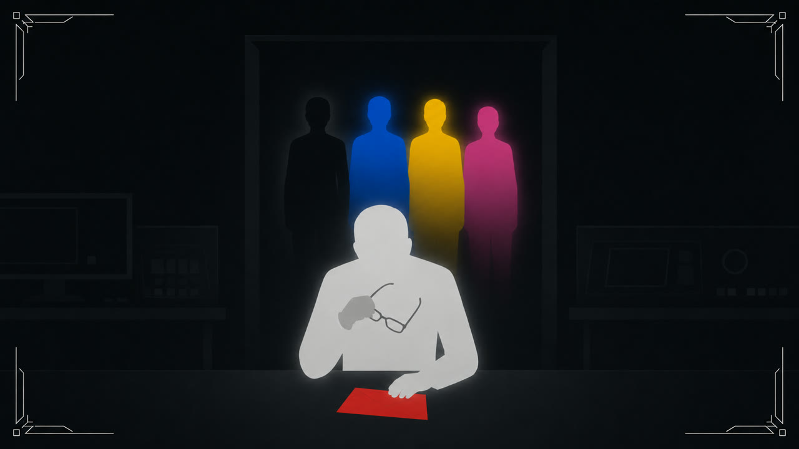

Ending C-2
Ending C-2
블랙은 끝내 말하지 않았다. 옐로는 레드를 죽이지 않았다는 말을 다시 해야 했다.
며칠 동안 진술과 조사 자료를 되짚었지만 대원들의 의견은 좁혀지지 않았다. 같은 질문이 돌아올 때마다 옐로의 대답은 짧아졌다.
“옐로가 레드를 죽였다고 확정할 수는 없어용. 이대로 내보내지는 않겠어용.”
블루가 옐로에게 다가갔다. 옐로는 지금은 혼자 있고 싶다고 말하고 방으로 돌아갔다. 블루는 문 앞까지 따라갔다가 발길을 돌렸다.
다음 출동을 준비하며 옐로가 돌아갈 길을 설명했다. 블랙이 그 길을 정말 확인했느냐고 묻자, 옐로는 같은 설명을 처음부터 되풀이했다. 블루가 함께 확인했다고 말해도 대화는 끝나지 않았다.
“현장에서도 계속 다시 물을 거예요?”
핑크는 준비가 끝났다는 보고를 하지 못했다. 네 사람은 서로의 말을 확인하느라 출동 순서도 정하지 못하고 있었다.
박사는 출동을 미루고 장비를 거뒀다. 네 사람이 방으로 돌아간 뒤에도 작전실에 남아 있었다.
그날 밤 다시 알림이 울렸다. 박사는 네 사람을 부르려다가 통신을 끊었다. 잠든 대원을 찾아가 깨우는 대신, 연구실에서 기억 소거 장치를 가져왔다.
박사는 방을 차례로 찾아 대원들을 기절시킨 뒤 머리에 장치를 씌웠다. 첫 번째 대원에게 손을 뻗었을 때만 잠시 멈췄다. 그 뒤로는 장치의 설정을 확인하고 같은 작업을 되풀이했다.
레드가 살해된 일과 시신을 발견한 장면, 범인을 찾으며 나눈 대화에 관한 기억이 지워졌다. 나중에 아이의 부모를 구한 일과 그전까지의 레인저 활동은 남겨 뒀다.
블랙에게도 같은 범위로 장치를 사용했다. 레드를 죽인 기억도 함께 사라졌다.
네 사람은 자신에게 무슨 일이 벌어졌는지 알지 못한 채 잠들어 있었다. 박사는 장치를 치우고, 어느 기억을 지웠는지 혼자 기록했다.
다음 날 아침, 핑크가 라운지에 모인 사람들에게 레드는 아직 안 나오느냐고 물었다. 블루와 옐로도 복도를 돌아봤다.
박사는 네 사람을 작전실로 불렀다.
“레드는 아이의 부모를 찾던 중에 카오스의 공격을 받았어용. 연구소로 돌아왔지만 살리지 못했어용.”
옐로는 의자에 앉아 얼굴을 감쌌다. 핑크가 언제 그런 일이 있었느냐고 물었다. 박사는 레드가 혼자 조사하던 중이었다고 답했다.
박사는 네 사람이 레드의 보고서를 따라가 아이의 부모를 구했다고 덧붙였다. 대원들은 그 작전을 기억했다. 부모와 아이가 다시 만났다는 말에 핑크가 고개를 끄덕였다.
출동 알림이 울리자 블랙이 먼저 일어났다. 박사는 장비를 건네며 앞으로 모든 경로를 작전실에도 알리라고 말했다.
현장에 도착한 블랙이 진입할 길을 정했다. 블루와 옐로는 그가 가리킨 방향으로 움직였고, 핑크가 통신을 연결했다. 박사는 네 사람에게서 들어오는 보고를 하나씩 적었다.
엄마와 아빠의 손을 잡고 집으로 가던 길이었어.
사람들이 길을 비켜 주자 네 명의 미라클 레인저가 달려왔어. 나는 엄마 손을 잡아당겼어.
블랙, 블루, 옐로, 핑크!
엄마와 아빠를 데리고 돌아왔던 영웅들이야. 레드는 없지만, 저 네 사람이 오면 괜찮을 거라고 생각했어.
나는 크게 이름을 불렀어. 핑크가 손을 흔들어 줬고, 엄마와 아빠도 함께 손을 들었어.
“역시 미라클 레인저는 최강이야!”
네 사람이 골목을 돌아 사라질 때까지 엄마와 아빠는 내 손을 꼭 잡고 있었어.
출동이 끝난 뒤, 박사는 혼자 작전실에 앉아 있었다. 잠금 서랍에서 붉은 봉투를 꺼내 그 안의 기록을 펼쳤다.
첫 장에는 레드가 연구소에서 살해됐다고 적혀 있었다. 그 뒤로는 옐로를 지목한 뒤에도 범인을 확정하지 못했다는 내용이 이어졌다. 네 사람에게 기억 소거 장치를 사용한 날짜 아래에는 박사의 이름이 적혀 있었다.
박사는 그 날짜를 손으로 짚었다. 아무리 다시 읽어도 범인의 이름을 적을 수는 없었다. 기억을 지우기 전에 대원들이 했던 말과 서로를 바라보던 얼굴은 떠올랐다.
복도에서 돌아온 대원들의 목소리가 들렸다. 박사는 안경을 벗고 눈가를 닦았다.

“박사님, 저희 왔어요.”
박사는 목소리를 가다듬고 잠깐만 기다리라고 말했다. 기록을 봉투에 넣은 뒤에도 손이 떨려 서랍을 바로 잠그지 못했다.
서랍을 잠근 박사는 한 번 더 눈가를 닦고 일어나, 네 사람이 기다리는 문을 열었다.